Analysis showcase
Overview.
In this document I go over a few analyses and figures with some opinions along the way.
- With WGS pairwise distances provided by Duchen, we can now analyse the differences between and within coexistence and create predictions based off of each.
- As well this data allows us to construct phylogenies. I have constructed a few here but details needed at nodes would be useful (and of course to make them look more aesthetically pleasing).
- WGS to S. intermedia also allows us to incorporate pairwise temperature differences with more power, given the residuals to WGS distances. The question if we should do this is more nuanced.
- I also provide a few Anovas to contrast the effects of temperature, selected sites, neutral sites, WGS (among and within) and spatial to ND, FD, Coex. Results for selected and “neutral” sites are qualitatively similar to WGS so I do not provide figures though see comment re: “neutral”. Temperature appears to play a role in ND and not FD which is very interesting.
- Finally I argue reasons for our negative slope and >0 intercept of FD. If any of these sound convincing they may warrant deeper analysis.
Background
Within species only
As a reminder this was about where we left off:
ND increases over WGS intraspecific pairwise distance
FD decreases over WGS intraspecific pairwise distance (though with the correction I mention below, p value goes to 0.08 if that matters, I wouldn’t hold too much weight over it until bayesian).
Coex increases over WGS intraspecific pairwise distance
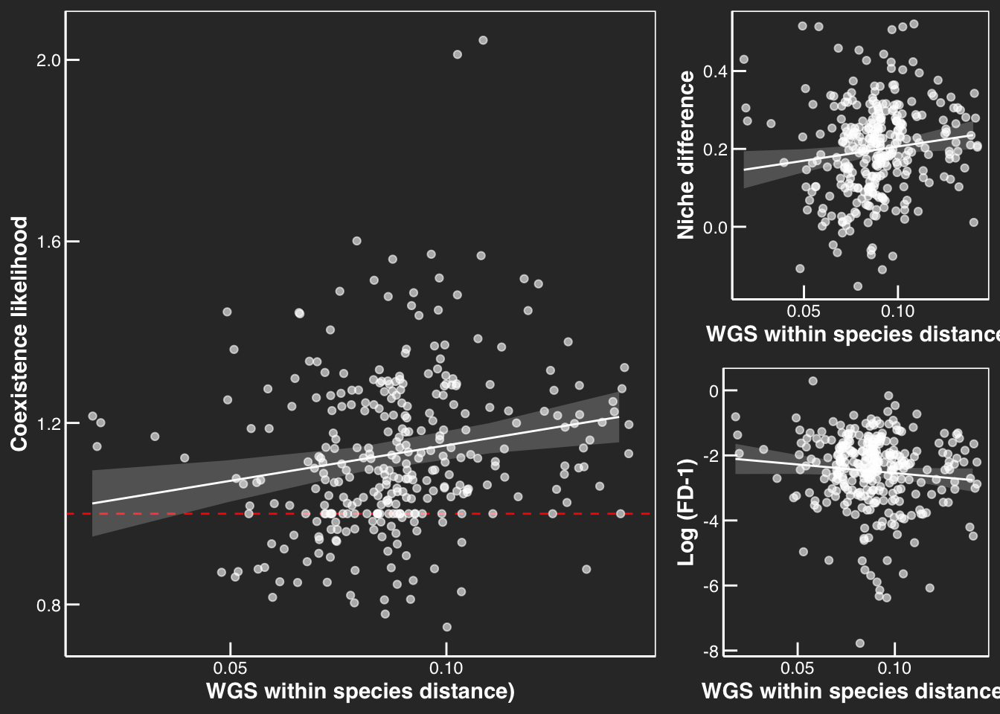
Within + between species
Trends that change
[same] ND increases over WGS pairwise distance <- expected by theory
[different] FD increases over WGS pairwise distance <- expected by theory
[same] Coex increases over WGS intraspecific pairwise distance <- still unexpected(?) by theory under brownian motion.
Fit under whole model, each significant. (note that this result is highly robust, even when data is ranked/compressed/logged/you name it).
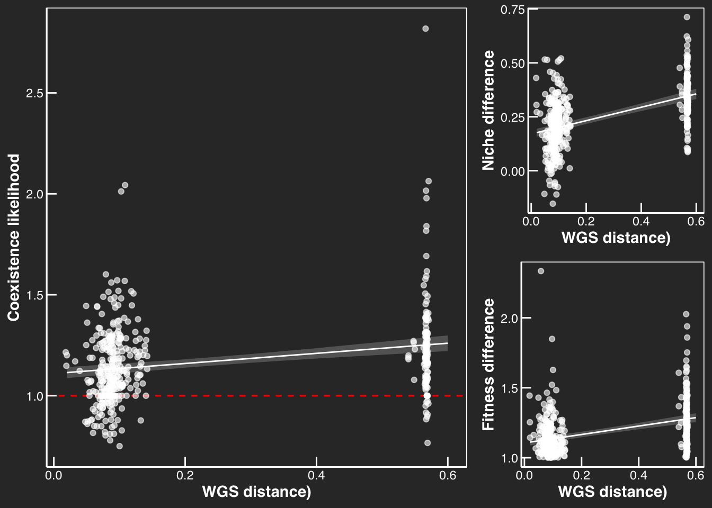
What if we use the within species model to predict the ND, FD, and Coex of among species?
Between species only
Trends that change
[different] ND constant over WGS interspecific pairwise distance
[different] FD constant over WGS interspecific pairwise distance
[different] Coex constant over WGS interspecific pairwise distance
For between species only, we see no significant change across genetic distances which is very interesting. Could this mean that the mechanisms driving ND and FD intraspecifically are different to those interspecifically?
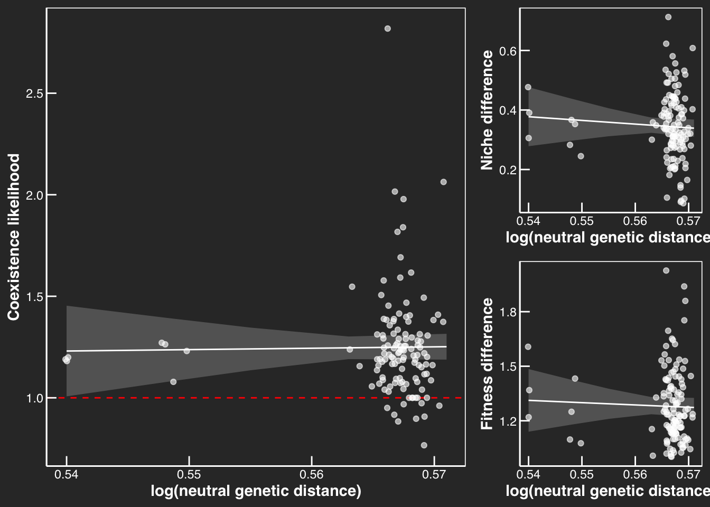
Phylogenies (work in progress)


Predicting coexistence trajectories across species
Here we can observe how an estimation of a linear model with just within species data predicts between species GAM (with random effects). To me this is a fairly interesting result, the plateauing of niche differences with genetic distance.
Green = linear model estimated from S. polyrhiza alone
Orange = GAM model estimated from both S. polyrhiza and S. intermedia
Niche difference Vs Genetic distance (WGS)
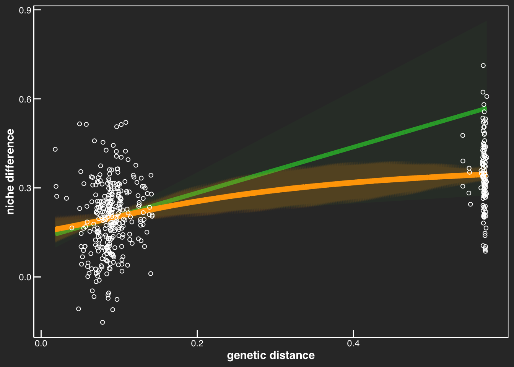
Fitness difference Vs Genetic distance (WGS)
First to do this I needed to transform the data to work.
I transformed the data from relative FD to log(RFD -1) specifically to prevent the model from projecting RFD < 0 from the linear model (which if you recall our FD slope approaches 0 intraspecifically, suggesting negative FD inter specifically which does not make sense.)
- Note: Takuji had originally log transformed FD which helped but still did not quite fix normality and inadvertently allows the model to project into a domain not physically possible when projecting to S. intermedia.
While not perfect as you can see it does help!
Hopefully this makes sense to everyone. (I tried other glms but they didn’t seem to play nice for this data distribution).
QQ plots for normality of FD
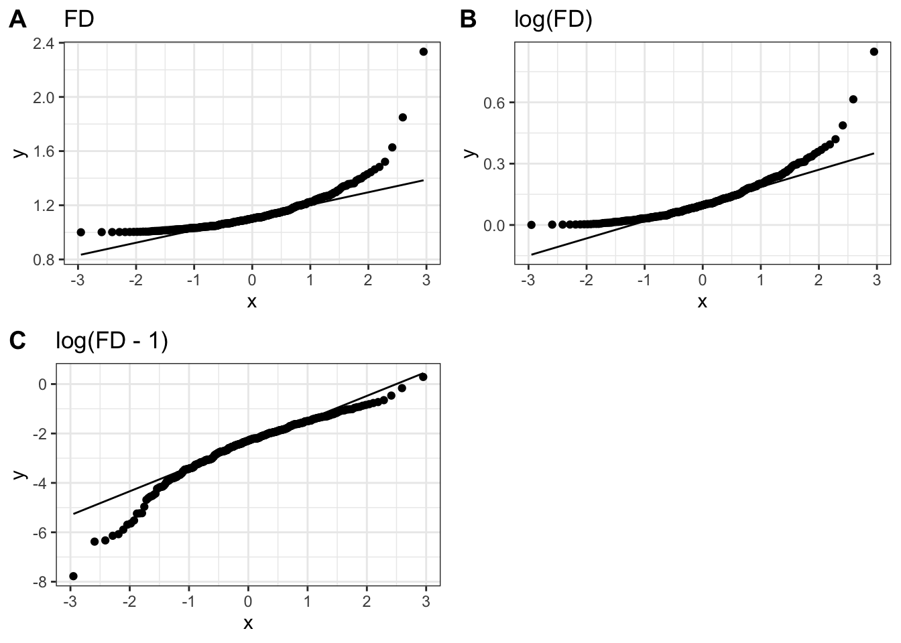
Now that the data is transformed, its very interesting how RFD is projected to approach 1 based off of intraspecific data. (i.e. our negative FD slope). I
Hot take perspective:
- I wonder if there could be an argument towards evolutionary fitness given the supposed lack of reproductive isolation represented by green.
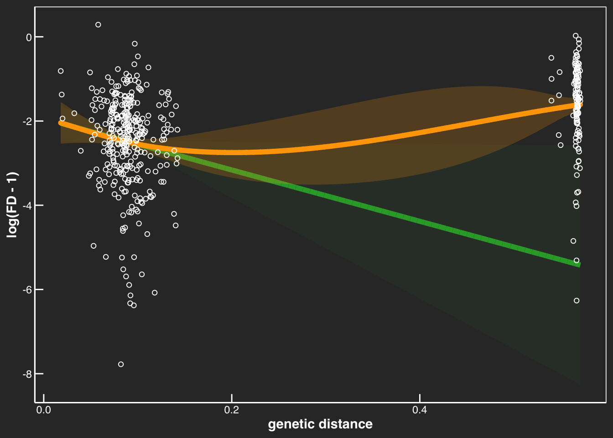
Coexistence Vs Genetic distance (WGS)
And coexistence likelihood which is perhaps the best figure!
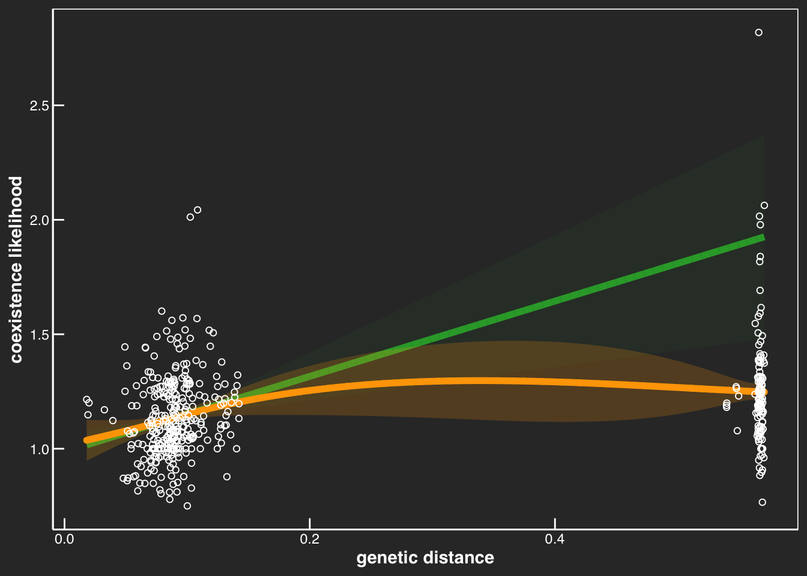
Climatic Temperature
Summary of data below:
Signal for coexistence is broadly stronger than ND or FD alone.
Temperature is marginally significant across selected, neutral, and WGS.
Neutral is marginally significant for coexistence. This may change when we get true neutral data.
WGS as a predictor for coex is very robust.
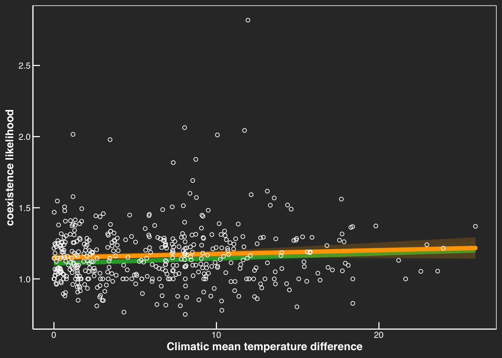
- Effect of temperature (alone) is conserved between among and within analysis.
Absolute temperature vs asymmetry to greenhouse conditions.
Something to consider is that performance may be dictated by distance to home environment. To quantify this we can calculate average pairwise asymmetry/difference to greenhouse conditions by:
\(\overline T_{\:GH\:asymmetry}= abs \bigg (\dfrac{|\overline T_{i} - 21.48| - |\overline T_{j} - 21.48|}{2} \bigg )\)
Because this calculates asymmetry, if for example Ti = 31.48 and Tj = 11.48 would be just as asymmetric as both Ti and Tj = 21.48.
As you see below, all fairly insignificant (p>0.4)
Note: Whether we should use this or absolute temperature is debatable but I would argue absolute temperature makes more sense if we are not arguing temperature itself selects, rather everything associated with temperature may produce different niche conditions. (eg. community composition, nutrient availability, etc.)
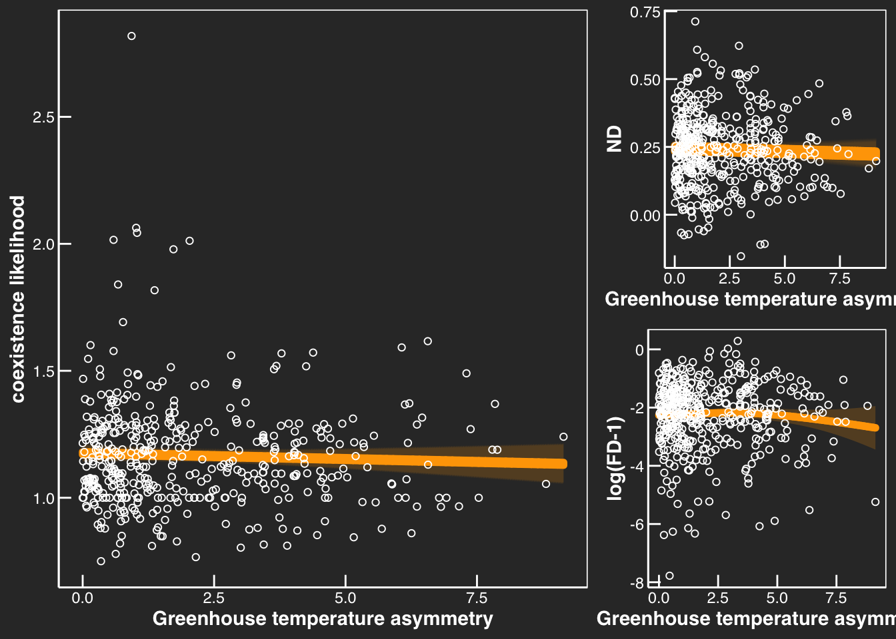
Temperature x Genetic
Selected sites and “neutral” sites.
Background
Selected sites were done in two approaches:
Matrix selDiv has the genetic distances from all genes corresponding to the top 1% of 3P-CLR.
Matrix selSpWide has the distances from all genes corresponding to the top 1% of RAiSD.
For brevity here I will show the analysis of selDiv, though results are similar.
Neutral sites are not explicitly neutral.
- Shuqing: “The matrix”neutral” has the distances from all remaining genes. Of course this isn’t necessary “neutral”, but I could filter out more genes if you deem necessary.”
For this analysis it does not make sense to examine between species as the scales are quite different?
Below is what we can see for interactive effects.
Note: All below analysis is done as a Type II anova
Selected sites within S. polyrhiza
| Chisq | Df | Pr(>Chisq) | |
|---|---|---|---|
| selDiv_value | 0.8632943 | 1 | 0.3528184 |
| Temp_mean_diff | 3.6667521 | 1 | 0.0555083 |
| selDiv_value:Temp_mean_diff | 0.2497082 | 1 | 0.6172806 |
| Chisq | Df | Pr(>Chisq) | |
|---|---|---|---|
| selDiv_value | 4.0161640 | 1 | 0.0450661 |
| Temp_mean_diff | 0.0796628 | 1 | 0.7777549 |
| selDiv_value:Temp_mean_diff | 0.8243062 | 1 | 0.3639241 |
| Chisq | Df | Pr(>Chisq) | |
|---|---|---|---|
| selDiv_value | 4.8945442 | 1 | 0.0269417 |
| Temp_mean_diff | 1.3849033 | 1 | 0.2392677 |
| selDiv_value:Temp_mean_diff | 0.8565437 | 1 | 0.3547077 |
Neutral-ish sites within S. polyrhiza
| Chisq | Df | Pr(>Chisq) | |
|---|---|---|---|
| neutral_value | 0.6109541 | 1 | 0.4344288 |
| Temp_mean_diff | 3.7812621 | 1 | 0.0518296 |
| neutral_value:Temp_mean_diff | 0.2092111 | 1 | 0.6473864 |
| Chisq | Df | Pr(>Chisq) | |
|---|---|---|---|
| neutral_value | 3.5775984 | 1 | 0.0585638 |
| Temp_mean_diff | 0.0609151 | 1 | 0.8050553 |
| neutral_value:Temp_mean_diff | 0.6722868 | 1 | 0.4122555 |
| Chisq | Df | Pr(>Chisq) | |
|---|---|---|---|
| neutral_value | 3.5934809 | 1 | 0.0580066 |
| Temp_mean_diff | 1.5251486 | 1 | 0.2168420 |
| neutral_value:Temp_mean_diff | 0.5178036 | 1 | 0.4717801 |
WGS (within S. polyrhiza)
- Note: with the transformation FD based of WGS becomes slightly weaker
| Chisq | Df | Pr(>Chisq) | |
|---|---|---|---|
| pw_WGS | 3.9393406 | 1 | 0.0471693 |
| Temp_mean_diff | 3.3206574 | 1 | 0.0684145 |
| pw_WGS:Temp_mean_diff | 0.4090223 | 1 | 0.5224662 |
| Chisq | Df | Pr(>Chisq) | |
|---|---|---|---|
| pw_WGS | 2.9565258 | 1 | 0.0855315 |
| Temp_mean_diff | 0.0198476 | 1 | 0.8879636 |
| pw_WGS:Temp_mean_diff | 0.6065527 | 1 | 0.4360887 |
| Chisq | Df | Pr(>Chisq) | |
|---|---|---|---|
| pw_WGS | 8.926924 | 1 | 0.0028100 |
| Temp_mean_diff | 1.623254 | 1 | 0.2026386 |
| pw_WGS:Temp_mean_diff | 1.342556 | 1 | 0.2465837 |
WGS (among S. polyrhiza & S. intermedia)
- Note: with the transformation FD based of WGS becomes slightly weaker
| Chisq | Df | Pr(>Chisq) | |
|---|---|---|---|
| pw_WGS | 167.880360 | 1 | 0.0000000 |
| Temp_mean_diff | 8.771491 | 1 | 0.0030598 |
| pw_WGS:Temp_mean_diff | 4.365298 | 1 | 0.0366781 |
| Chisq | Df | Pr(>Chisq) | |
|---|---|---|---|
| pw_WGS | 53.3323915 | 1 | 0.0000000 |
| Temp_mean_diff | 0.3207949 | 1 | 0.5711304 |
| pw_WGS:Temp_mean_diff | 2.4313310 | 1 | 0.1189319 |
| Chisq | Df | Pr(>Chisq) | |
|---|---|---|---|
| pw_WGS | 37.123841 | 1 | 0.0000000 |
| Temp_mean_diff | 7.098584 | 1 | 0.0077145 |
| pw_WGS:Temp_mean_diff | 3.995274 | 1 | 0.0456280 |
- because of the increased power perhaps, ND increases with temperature when including pairwise contrasts to intermedia as well. Whether we should use this or the previous data to argue for temperature depends on specifically what we are trying to say in the context of speciation. Temperature definitely appears to have an affect on niche (rather than fitness) though.
Temperature x Spatial distance
Similarly, for this analysis it does not make too much sense to include S. intermedia.
Spatial within S. polyrhiza
| Chisq | Df | Pr(>Chisq) | |
|---|---|---|---|
| spatial.D | 0.0780516 | 1 | 0.7799553 |
| Temp_mean_diff | 4.5502165 | 1 | 0.0329146 |
| spatial.D:Temp_mean_diff | 0.9504639 | 1 | 0.3296013 |
| Chisq | Df | Pr(>Chisq) | |
|---|---|---|---|
| spatial.D | 0.2576502 | 1 | 0.6117391 |
| Temp_mean_diff | 0.0798913 | 1 | 0.7774447 |
| spatial.D:Temp_mean_diff | 0.2948870 | 1 | 0.5871057 |
| Chisq | Df | Pr(>Chisq) | |
|---|---|---|---|
| spatial.D | 0.6262635 | 1 | 0.4287292 |
| Temp_mean_diff | 3.4386094 | 1 | 0.0636893 |
| spatial.D:Temp_mean_diff | 0.2287548 | 1 | 0.6324487 |
Explaining fitness difference
Reason 1: Extreme cases
I may have another hypothesis as to why we have a significant negative slope for fitness differences. I am wondering if it’s because we have very few genotypes that exist at low pair wise genetic distance. This is because most genotypes that have low genetic distance will likely have low spatial distance and are not in our design. What that means is that we may be biasing our selection of close relatives to those that are spatially very far away. Perhaps this is only achievable biologically if one of those genotypes (far from origin) is very fit. Of course theoretically there is no correlation, not negatively correlated. But if we look at the among lineages:
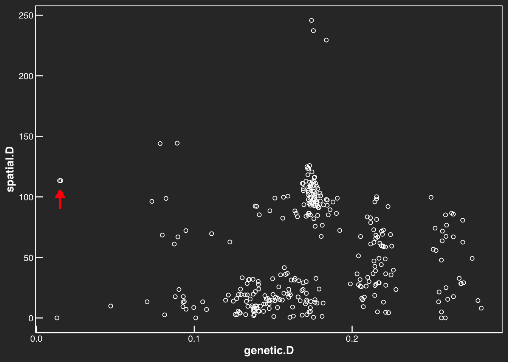
Rank analysis
If we rank our data this flattens spatial and genetic data such that we biologically are reducing the stronger effect on the edges. Of course this comes at a cost of reducing the magnitude those data points can pull. One could argue this may diminish our analysis (and underlying biological inference) of phylogenetic distance in the absence of spatial autocorrelation.
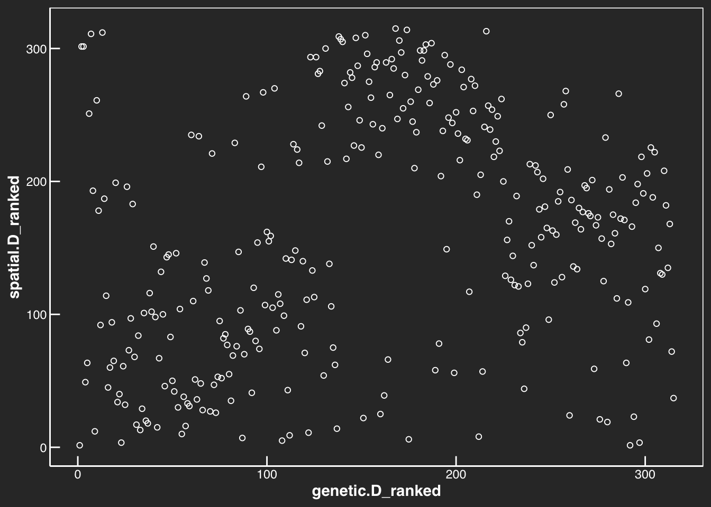
If we run a rank correlation what happens is ND is strengthened but FD is reduced.
I also conducted a rank analysis to interspecific (as the genetic distance is so large) and optimistically our results are extremely robust across analyses. I have not included it here for brevity (document is already very long) but if people want to see it I am happy to show!
Reason 2: Not enough time for competition.
Reason 2 may be that not enough time has occurred at early stages to ‘filter’ out lower fit genotypes.
While this is possible I do not believe this is true because we find no correspondence between FD and spatial distance. This lack of association suggests that even given time there is no reason to believe competitive interactions/periods of sympatry as a selective agent.
Of course current space does not indicate history of sympatry though. Perhaps more indicitive of history of sympatry is close genetic relatedness with high spatial distances?
Reason 3: Selection at different stages
Reason 3 would be based on the evolutionary rates we observe for niche and fitness differences. If it is to be believed ND evolves slower than FD, selection may favor greater FD at early stages. As ND accumulate, selection for greater FD may simply not be as strong. Personally I dont think we can use this argument by itself as its tautological with our own data. We would need to run a simulation which is outside the scope of this project but its a fun idea :)
Reason 4: Not capturing moment of divergence
This could be the most boring or most interesting answer depending who you ask. But we have few data points around origin and even though this experiment goes closer to the origin than ever before, we could still be missing something in the precise moment lineages diverge. Personally I find this hard to believe given the SNP data.